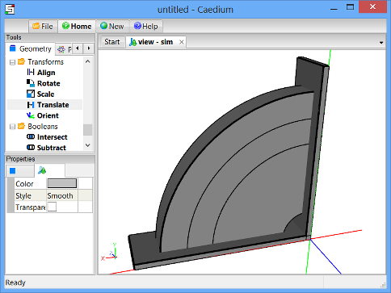

Mixer Quadrant
Create an axi-symmetric quadrant of the fluid region around a mixer with paddles and baffles. The geometry is composed of multiple topological 6-sided blocks, often referred to as a multi-block topology. Each block can be meshed with structured hexahedra.
Goals
In this tutorial, you will learn how to:
- Create cylinder sectors
- Create boxes
- Copy geometry
- Transform geometry
- Subtract one volume from another
- Decompose one volume with another
- Connect faces to form a multi-volume flow domain
Assumptions
- You have activated the Caedium Builder add-on or Caedium Professional.
- You are familiar with Caedium essentials.
Create Baffle Cylinder Quadrant
Select the Geometry Tool Palette.
Select the Volumes->Cylinder tool. In the Properties Panel, turn off the Decompose property, set the Radius to 0.6, set the Sector to 90, and set the Z Height to 0.1. Press Enter on the keyboard to apply the changes to the Properties Panel.
Drag and drop the Volumes->Cylinder tool onto the View Window (view). Select Done to create a cylinder quadrant (volume).
All geometry is created at the origin by default.
In the View Window rotate the cylinder quadrant until it is in the orientation shown below.
Create and Translate Axes
Axes can be translated to any location in the View Window. You can then create geometry that is centered on those axes rather than at the origin (the default location).
Drag and drop the Others->Axes tool onto the View Window. Double-click sim in the Select dialog and select Done to create axes (axes).
You will need to scroll down through the Geometry Tool Palette to find the Axes tool.
To translate the axes to a new location in the View Window, select the Transforms->Translate tool and in the Properties Panel set Translate to [0 0 -0.05].
Drag the Transforms->Translate tool and drop it directly onto the axes you created in the View Window. Select Done to translate the axes.
The axes will now be visible at their new location in the View Window.
Create Middle Cylinder Quadrant
Select the Volumes->Cylinder tool. In the Properties Panel, set the Radius to 0.5 and set Z Height to 0.2.
Drag and drop the Volumes->Cylinder tool directly onto the axes you created. Select Done to generate a cylinder quadrant (volume_1).
To shade the geometry faces, right-click on the View Window background, double-click sim->Faces, and select Properties from the menu. In the Properties Panel, turn off the Transparent property to make all faces visible (shaded).
Shading the faces in the simulation will make it easier to select volumes for the next operation.
Decompose the Baffle Cylinder with the Middle Cylinder
Drag and drop the Booleans->Decompose tool directly onto a face of the baffle cylinder. Double-click volume in the Select dialog to select the baffle cylinder. Select Select/Deselect from the menu, right-click on a face of the middle cylinder. Double-click volume_1 to select the middle cylinder. Select Done to decompose the baffle cylinder with the middle cylinder to produce the baffle annulus quadrant (volume_2) and a new middle cylinder quadrant (volume_3).
Create Paddle Cylinder Quadrant
Select the Volumes->Cylinder tool. In the Properties Panel, set Radius to 0.4.
Drag and drop the Volumes->Cylinder tool directly onto the axes. Select Done to generate the paddle cylinder quadrant (volume_4).
To shade the geometry faces, right-click on the View Window background, double-click sim->Faces, and select Properties from the menu. In the Properties Panel, turn off the Transparent property to make all faces visible (shaded).
Decompose the Middle Cylinder with the Paddle Cylinder
Drag and drop the Booleans->Decompose tool directly onto a face of the middle cylinder. Double-click volume_3 in the Select dialog to select the middle cylinder. Select Select/Deselect from the menu, right-click on a face of the paddle cylinder. Double-click volume_4 to select the paddle cylinder. Select Done to decompose the middle cylinder with the paddle cylinder to produce a middle annulus quadrant (volume_5) and a new paddle cylinder quadrant (volume_6).
Create Hub Cylinder Quadrant
Select the Volumes->Cylinder tool. In the Properties Panel, set Radius to 0.1.
Drag and drop the Volumes->Cylinder tool directly onto the axes. Select Done to generate the hub cylinder quadrant (volume_7).
To shade the geometry faces, right-click on the View Window background, double-click sim->Faces, and select Properties from the menu. In the Properties Panel, toggle the Transparent property on then off to make all faces visible (shaded).

Subtract the Hub Cylinder from the Paddle Cylinder
Drag and drop the Booleans->Subtract tool directly onto a face of the paddle cylinder. Double-click volume_6 in the Select dialog to select the paddle cylinder. Select Select/Deselect from the menu, right-click on a face of the hub cylinder. Double-click volume_7 to select the hub cylinder. Select Done to subtract the hub cylinder from the paddle cylinder to produce the paddle annulus quadrant (volume_8).
Create Baffle-Paddle Box
Select the Volumes->Box tool. In the Properties Panel, set Lengths to [0.7 0.02 0.2].
Drag and drop the Volumes->Box tool directly onto the axes. Select Done to generate a box (volume_9).
Transform a Copy of the Baffle-Paddle Box
Right-click on an edge of the baffle-paddle box in the View Window. Double-click volume_9 in the Select dialog to select the baffle-paddle box, and select the Copy option.
In the Home Toolbar click Paste to paste a copy (volume_10) of the baffle-paddle box at the same location as the original.
To rotate the baffle-paddle box copy (volume_10), select the Transforms->Rotate tool. In the Properties Panel set Rotate to [0 0 90].
Drag and drop the Transforms->Rotate tool directly onto the axes and select Set Axes. Right-click on an edge of the baffle-paddle box copy in the View Window. Double-click volume_10 in the Select dialog to select the baffle-paddle box copy and select Done to rotate the baffle-paddle box copy around the axes.
To translate the baffle-paddle box copy (volume_10), select the Transforms->Translate tool. In the Properties Panel set Translate to [0.02 0 0]. With the baffle-paddle box copy still selected from the previous operation click Add Translate at the bottom of the Properties Panel and select Done to translate the baffle-paddle box copy.
To shade the geometry faces, right-click on the View Window background, double-click sim->Faces, and select Properties from the menu. In the Properties Panel, toggle the Transparent property on then off to make all faces visible (shaded).

Create Baffles
Select the Booleans->Subtract tool. In the Properties Panel, turn on the Keep Operands property.
Drag and drop the Booleans->Subtract tool directly onto a face of the baffle annulus. Double-click volume_2 in the Select dialog to select the baffle annulus. Select Select/Deselect from the menu, right-click on a face on the original baffle-paddle box. Double-click volume_9 to select the original baffle-paddle box. Select Select/Deselect from the menu, right-click on a face on the copied baffle-paddle box. Double-click volume_10 to select the copied baffle-paddle box. Select Done to produce the final baffle annulus quadrant (volume_11).
Right-click on a shaded face of the original baffle annulus in the View Window. Double-click volume_2 in the Select dialog to select the original baffle annulus, and select the Delete option.
Create Paddles
Perform the same sequence of operations as for the final baffle annulus quadrant creation in the previous section, except start with the paddle annulus quadrant (volume_8) instead of the baffle annulus quadrant. The end result will be a final paddle annulus (volume_12).

Decompose Middle Annulus
Drag and drop the Booleans->Decompose tool directly onto a face of the middle annulus. Double-click volume_5 in the Select dialog to select the middle annulus. Select Select/Deselect from the menu, right-click on an original baffle-paddle box face. Double-click volume_9 to select the original baffle-paddle box. Select Done to decompose the original middle annulus to produce two new volumes (volume_13, volume_14).
To shade the geometry faces, right-click on the View Window background, double-click sim->Faces, and select Properties from the menu. In the Properties Panel, toggle the Transparent property on then off to make all faces visible (shaded).
Drag and drop the Booleans->Decompose tool directly onto a face of the middle annulus. Double-click volume_13 in the Select dialog to select the middle annulus. Select Select/Deselect from the menu, right-click a face of the copied baffle-paddle box. Double-click volume_10 to select the copied baffle-paddle box. Select Done to decompose the middle annulus to produce two new volumes (volume_15, volume_16).
Connect Faces
Drag and drop the Faces->Connect tool directly onto the View Window background, double-click sim->Faces, and select Done to connect all faces with matching topology and geometry.
Notes
The complete geometry created in this tutorial is available as a free download at mixer-geom.sym.
See the "Rotating Paddle using Moving Reference Frame" tutorial for a flow simulation that uses this geometry.
Feedback
Questions? Ideas? Problems?